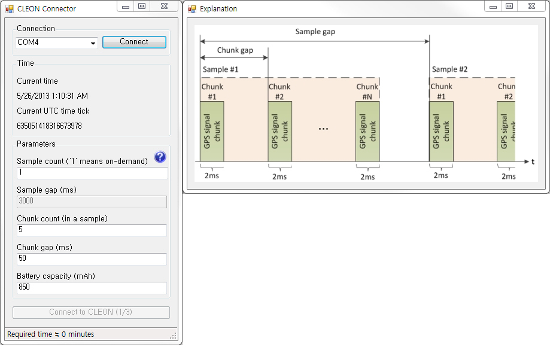
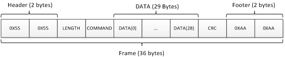
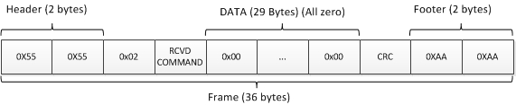
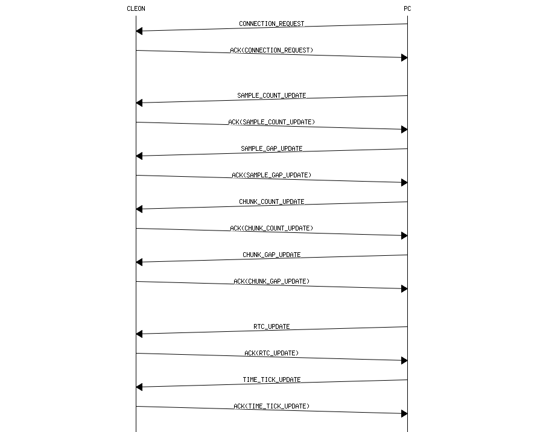

Each sample consists of several 2ms GPS signal chunks
The figure below is the screenshot of the 'CLEON CONNECTOR'
(The figure includes a window for 'Explanation' which is popped up if you click the question mark icon)
If there's an error, the SW indicates the error with red colored text

Connection
This will list all the available COM port on your PC
Select the port that your CLEON is connected to and click 'Connect' button to establish connection to CLEON
Time
In the time group, it shows current time and UTC time tick
In the parameters group, you can set parameters to user defined value
Sample coount ('1' means on-demand)
If default 'Sample count' 1 is used, CLEON capture GPS signal on demand upon pressing user button
Otherwise, you can set user defined value
Sample gap(ms)
If 'Sample count' is greater than 1, you can define 'Sample gap' in milliseconds
'Sample gap' should be multiple of 1000 (ms)
Chunk count (in a sample)
Number of chunks in a sample
Chunk gap (ms)
Time betweem chunk
'Chunk gap' should be at least 50 (ms)
Battery capacity (mAh)
'CLEON CONNECTOR' will calculate whether the user defined number of samples can be captured with given battery capacity
Use this as referential purpose only
Quick start guide
Below are a few steps to help you get started
Turn on the CLEON device
Connect CLEON to PC using USB cable
Launch PC based software 'CLEON CONNECTOR' for time sychronization and user parameter update
In the 'CLEON_CONNECOTR', change user paramters to desired values
(If there's an error for the value of parameter, it is impossible to update user parameters)
(Although battery capacity is used as parameter, this is used only to calculate rough estimate whether desired number of samples can be captured with the capacity)
Select the COM port that CLEON is connected to
Then, press 'Connect' button
Once COM port is successfully opened, 'Connect to CLEON (1/3)' button will be enabled
Once CLEON is successfully connected, 'Connect to CLEON (1/3)' button will be changed to 'Update parameters (2/3)'
Press 'Update parameters (2/3)' to update CLEON with user parameters (sample count, sample gap, chunk count, chunk gap)
Once user parameters are successfully updated, 'Update parameters (2/3)' button will be changed to 'Update CLEON time tick (3/3)'
Press 'Update CLEON time tick (3/3)' to update CLEON system time (RTC time and millisecond time tick)
'CLEON CONNECTOR' will notify of successful update by showing the value of sent tick
Now that user parameters are updated and CLEON system time is synchronized, CLEON is ready to capture GPS and sensor data
Press user-button on CLEON to initiate logging
If MicroSD is properly inserted, CLEON starts to log GPS and sensor data repeatedly as defined
At the first time, CLEON creates directory named 'CLEON' in MicroSD card and creates log file whose name is starting with current time tick under the directory 'CLEON'
The file will remain opened until defined number of GPS and sensor data is logged and written
(meaning that data will be appended to the opened file)
(This is to save energy consumed by seeking access to MicroSD)
If defined number of samples are captured, new file will be created for next logging
If MicroSD card is suddenly removed, MicroSD error LED will be turned on (however, data captured until error will remain uncorrupted)
If MicroSD is inserted back to the slot again, CLEON will initialze the file system again
LED Indicator
There are 6 LEDs between MicroSD card slot and JTAG header
Let's call the LEDs as LED1 to LED6 from the leftmost LED which is closest to MicroSD card slot
LED1 and LED3 are used to indicate errors
(If everything goes well and GPS signal is ready to be captured, LED1 and LED3 should be automatically turned off by the firmware)
LED1
ON : MicroSD is missing
OFF : MicroSD is in the slot
LED2
ON : GPS signal is being captured
OFF : GPS signal is not being captured
LED3
ON : Time is not synchronized
OFF : Time is synchrinized
LED4
N/A
LED5
N/A
LED6
N/A
USB frame
USB frame is used for exchanging data between CLEON and USB host (typically, PC)
USB frame is 36 bytes in total
USB frame starts with 2 bytes(0x55) of header and ends with 2 bytes(0xAA) of footer
Length fields includes the length of data plus one (meaning that length field itself is considered as data)
There should be an ACK for every data frame exchanged
The figure below decribes the format of the USB frame
USB data frame

USB ack frame

Time synchronization message is exchanged by using USB
The sequence chart below describes the communication between CLEON and PC

Generated on Sun May 26 2013 17:02:40 for CLEON CONNECTOR by
1.8.2
 1.8.2
1.8.2